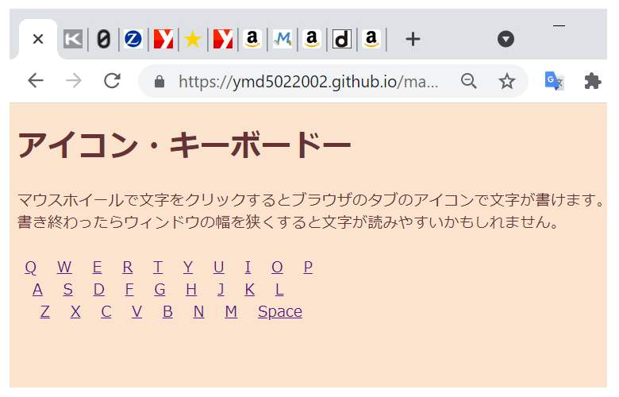

移転のお知らせ
このページはこちらに移転しました。
3秒後に移転先に移動します。お手数をおかけしますが「お気に入り」の変更をお願いします。
アイコン・キーボードー
マウスホイールで文字をクリックするとブラウザのタブのアイコンで文字が書けます。
書き終わったらウィンドウの幅を狭くすると文字が読みやすいかもしれません。
Q
W
E
R
T
Y
U
I
O
P
A
S
D
F
G
H
J
K
L
Z
X
C
V
B
N
M
Space
見本

by やまだこーじ(地図アート研究所)
twitter @h_sanpo
ソースコード/Github